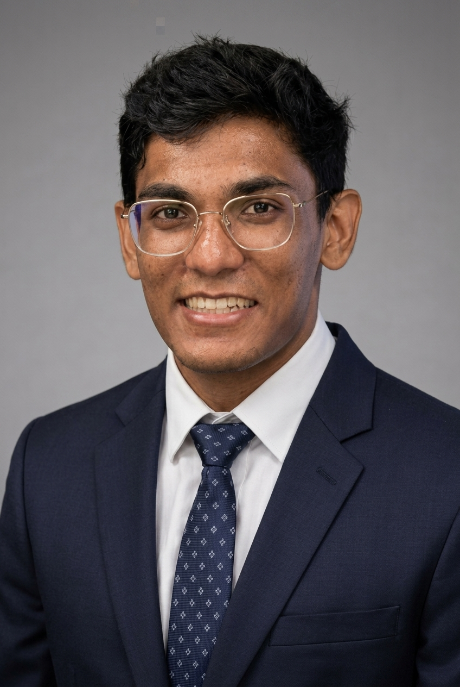

Fabric & granular mechanics
Investigating how deposition, particle arrangement, and evolving microstructure influence anisotropy, liquefaction, and instability in granular soils.
X-ray micro-CT · DEM · Fabric characterization
Computational geomechanics
Postdoctoral Fellow · Georgia Institute of Technology
Understanding soil behavior.
Connecting mechanics to prediction.
I study how the internal structure of soils shapes their behavior, and develop computational models and tools to understand the response of geotechnical systems.

My work brings together multiscale geomaterial mechanics, constitutive modeling, and numerical methods. The aim is to connect physical mechanisms with useful predictions for site characterization, soil instability, and geotechnical infrastructure.
Investigating how deposition, particle arrangement, and evolving microstructure influence anisotropy, liquefaction, and instability in granular soils.
X-ray micro-CT · DEM · Fabric characterization
Developing, implementing, and evaluating soil models to connect material response with large-deformation simulations and geotechnical boundary-value problems.
NorSand · ACST · FEM / MPM / PFEM
Studying cone penetration mechanisms, stress-relief instability, and slope response to support mechanics-informed interpretation and assessment of geosystems.
CPT · Inverse analysis · Tailings & slopes
I am exploring scientific machine learning and AI-informed computational modeling, with an emphasis on integrating physical principles into constitutive models and surrogate simulations.
Selected journal articles on soil fabric, constitutive integration, and the mechanics of liquefaction and instability.
Srinivas Vivek, B., and Macedo, J.
Computers and Geotechnics · Preprint available
Srinivas Vivek, B., Macedo, J., and Arduino, P.
Computers and Geotechnics
Srinivas Vivek, B., and Macedo, J.
Canadian Geotechnical Journal
Srinivas Vivek, B., and Macedo, J.
Canadian Geotechnical Journal
Srinivas Vivek, B., Macedo, J., and Petalas, A. L.
Computers and Geotechnics
Srinivas Vivek, B., Macedo, J., Petalas, A. L., and Arson, C.
Computers and Geotechnics
Kumar, A., and Srinivas, B. V.
Geotechnical and Geological Engineering
I build scientific tools that connect data, models, and visualization, supporting reproducible research and a more intuitive understanding of soil behavior.
An integrated environment for soil laboratory data analysis, constitutive model calibration, and virtual element testing. Designed around reproducible workflows and extensible, user-defined models.
View project glimpseTools for granular microstructure characterization from DEM and X-ray micro-CT, including contact detection, fabric tensors, pore-space analysis, and interactive 2D/3D visualization.
Explore the toolkitInteractive explanations of image state, dilatancy, yield-surface evolution, and hardening. An educational resource used in instruction at Georgia Tech, Colorado School of Mines, and Virginia Tech.
Open interactive resourceMy teaching connects physical observations, mathematical reasoning, and computation. Through visual tools and research mentoring, I help students build independent problem-solving skills and interpret what their models predict.
Teaching interests
Soil mechanics · Constitutive modeling · Computational geomechanics · Numerical methods · Geotechnical earthquake engineering · Site characterization
Teaching assistant for Introduction to Geotechnical Engineering and Data Analytics in Civil and Environmental Engineering, including laboratory instruction and computational tutorials.
Teaching support for Rock Mechanics and Construction Materials through tutorials, laboratory demonstrations, and assessment.
Mentoring graduate researchers in constitutive theory and numerical implementation, and undergraduate VIP teams in computational geomechanics and high-performance computing.
Georgia Institute of Technology
Computational geomaterial mechanics, site characterization, and performance assessment of geosystems.
AECOM · Denver, Colorado
Numerical modeling of tailings storage facilities and interpretation of rapid vane shear and CPT data.
Georgia Institute of Technology
Georgia Institute of Technology
Hong Kong University of Science and Technology
Indian Institute of Technology Guwahati
Georgia Institute of Technology
Georgia Institute of Technology
Georgia Institute of Technology
Geo-Institute & Georgia Tech
Invited talks on tailings engineering and static liquefaction, alongside NorSand visualization lectures. Peer reviewer for ASCE geotechnical journals and Open Geomechanics; former Vice President of Georgia Tech’s Geotechnical Society.
06 / Get in touch
For conversations about research, computational tools,
teaching, or collaboration.
School of Civil and Environmental Engineering
Georgia Institute of Technology · Atlanta, USA